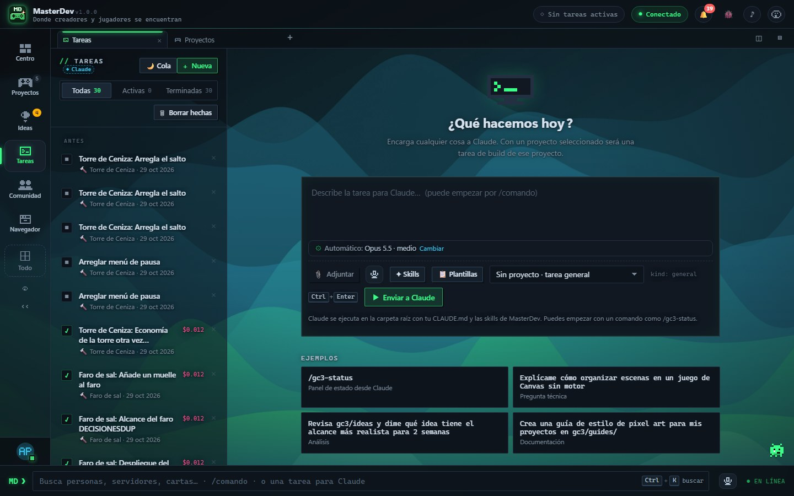
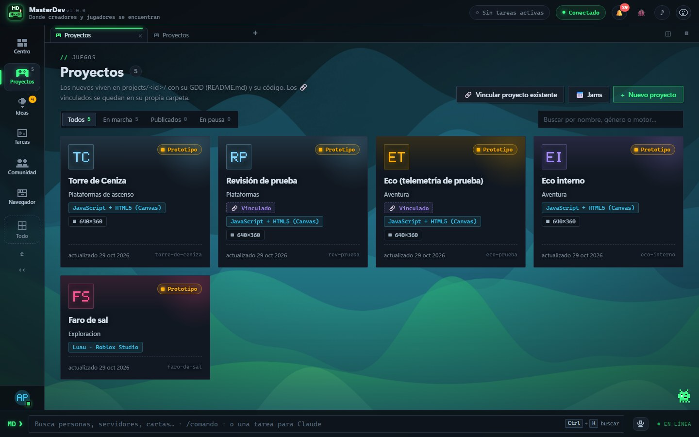

Qué hace
Implementa mecánicas, arregla bugs, refina ideas, crea proyectos desde una idea y responde preguntas sobre tu código.
Para creadores
MasterDev reúne lo que normalmente está repartido entre notas, carpetas, hojas de cálculo y chats: tus ideas, tu código, tus tareas y lo que dicen quienes prueban tu juego.
Paso 1
Apunta ideas en bruto, con imágenes, enlaces y notas. Cuando una te convence, conviértela en un concepto: de qué va, qué hace el jugador una y otra vez, y qué alcance tiene para una persona o un equipo pequeño.

Paso 2
Elige motor y resolución para cada juego. MasterDev crea el documento de diseño, las carpetas y un código inicial que funciona. Los juegos web se juegan dentro de la app con ▶ Jugar. ¿Ya tienes un juego en otra carpeta? Vincúlalo sin copiarlo ni tocarlo.
Plantillas para JavaScript + HTML5, Phaser y Roblox (Luau); cualquier otro motor por proyecto.

Paso 3
Cada proyecto tiene su estudio: el bucle principal, el balance, los diálogos, un tablero de tareas, la lista de bugs, el devlog y los textos para prensa y tienda. Graba notas de voz mientras juegas y conviértelas en tareas.

Paso 4
Publica tu juego en Descubrir y abre un playtest: los jugadores marcan lo que pasa mientras juegan y responden encuestas cortas. Si lo aceptan, también ves cómo se jugó cada partida.
Con un servidor MasterDev

Opcional
Claude es una IA de Anthropic. MasterDev puede encargarle trabajo de verdad sobre tus proyectos a través de Claude Code, si lo tienes. No hace falta para nada más.
Implementa mecánicas, arregla bugs, refina ideas, crea proyectos desde una idea y responde preguntas sobre tu código.
Cada encargo es una tarea. Ves en directo qué archivos lee, crea o edita, y puedes responderle para seguir.
Usa tu propia cuenta de Claude y tu plan. MasterDev no cobra nada por ello.
Eliges si puede editar solo, si te pregunta antes o si solo propone un plan. La Comunidad nunca usa Claude.
Un ejemplo
MD ❯ Añade un enemigo que persiga al jugador cuando esté cerca